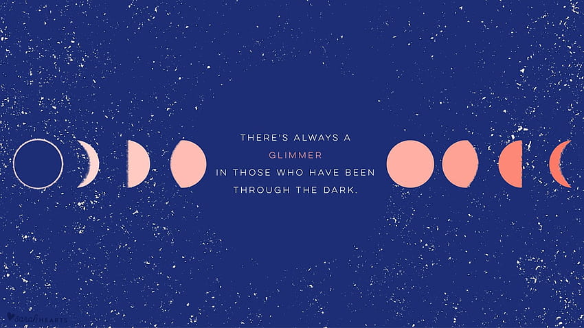

Bienvenidos a mi sitio web
Hay aquí dos hechos importantes: primero,
que el ser humano nunca está satisfecho,
excepto de una forma relativa o como si fuese sólo
el peldaño de una escalera, y segundo, esas necesidades
parecen ordenarse en una especia de jerarquía de predominio.

